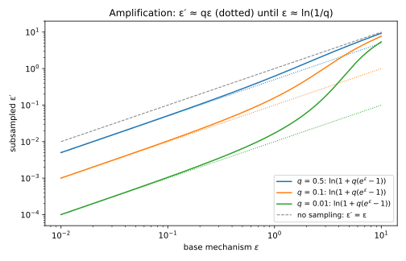
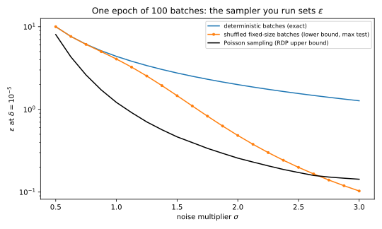
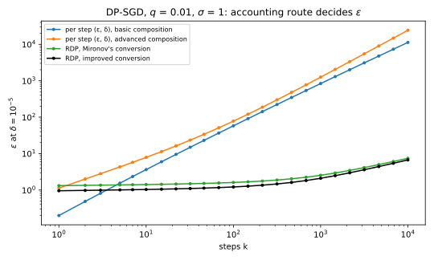
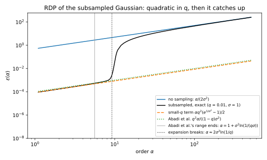

31 Amplification by subsampling
31.1 Why this matters
Differential privacy (DP) for deep learning would be useless without one trick. Stochastic gradient descent (SGD) with per-example clipping and Gaussian noise, DP-SGD, runs ten thousand steps or more. Each step clips every example’s gradient, sums them and adds Gaussian noise whose standard deviation is the noise multiplier \(\sigma\) times the clipping norm. If every record paid at every step, ten thousand steps with \(\sigma = 1\) would cost \(\varepsilon = 5425.5\) at \(\delta = 10^{-5}\), a number nobody would report. The trick is that each step looks only at a small random batch. If a record is in the batch with probability \(q\), an attacker must first guess whether it was used at all; with \(q = 0.01\) that uncertainty turns a step that costs \(\varepsilon = 1\) into one that costs about \(0.017\).
The one idea: the output with the record is a mixture, “used with probability \(q\), unused otherwise”, and mixing pulls every likelihood ratio towards 1. How much a step is worth depends on how far the mixture pulls, and because the mixture comes from how the batch was drawn, an accountant that assumes one sampler while the training code runs another reports a number that does not apply.
31.2 Amplification for (ε, δ)-DP under Poisson sampling
Under Poisson sampling each record enters the batch by its own independent coin flip with probability \(q\). Take add/remove neighbours, \(D\) and \(D' = D \cup \{x\}\), and fix which other records were drawn. On \(D\) the step outputs some distribution \(P_0\). On \(D'\) it outputs \(P_1\) if \(x\) was drawn and \(P_0\) otherwise, so it outputs the mixture \((1 - q)P_0 + qP_1\). Divide by \(P_0\) and the likelihood ratio \(P_1/P_0\) becomes \((1 - q) + q\,P_1/P_0\), a weighted average of 1 and the old ratio. If the step was \((\varepsilon, \delta)\)-DP, the old ratio was at most \(e^\varepsilon\) outside the \(\delta\) slack, so the new one is at most \(1 + q(e^\varepsilon - 1)\), and the slack only matters when the record was drawn. The result (Balle, Barthe & Gaboardi 2018) is \[\varepsilon' = \ln\big(1 + q(e^\varepsilon - 1)\big), \qquad \delta' = q\delta, \tag{31.1}\] for add/remove neighbours, and randomized response shows it cannot be improved. Randomized response at \(\varepsilon = 1\), sampled at \(q = 0.1\), has its likelihood ratio pulled from \(e = 2.718\) to \(1.1718\), so \(\varepsilon' = 0.1586\).
For small \(\varepsilon\), \(e^\varepsilon - 1 \approx \varepsilon\) and the logarithm is nearly linear, so \(\varepsilon' \approx q\varepsilon\): a 1% sample makes the step a hundred times cheaper. For large \(\varepsilon\), once \(qe^\varepsilon \gg 1\), the 1 inside the logarithm is negligible and \(\varepsilon' \approx \varepsilon - \ln(1/q)\): sampling only subtracts. The reason is the worst case: with probability \(q\) the record was drawn, and sampling can make that event rare but not less revealing. At \(q = 0.01\) a step with \(\varepsilon = 1\) costs 0.0170, but one with \(\varepsilon = 5\) still costs 0.9059, not 0.05, and one with \(\varepsilon = 10\) costs 5.3993, close to \(10 - \ln 100 = 5.395\) (Table 31.1). The switch happens near \(\varepsilon \approx \ln(1/q)\), where \(qe^\varepsilon\) reaches 1 (Figure 31.1).
| \(q\) | \(\varepsilon = 0.1\) | \(\varepsilon = 1\) | \(\varepsilon = 5\) | \(\varepsilon = 10\) |
|---|---|---|---|---|
| 0.01 | 0.0011 | 0.0170 | 0.9059 | 5.3993 |
| 0.1 | 0.0105 | 0.1586 | 2.7563 | 7.6978 |
| 0.5 | 0.0512 | 0.6201 | 4.3136 | 9.3069 |

Since the amplification is the attacker’s uncertainty about whether the record was used, each record’s coin must be independent of the rest of the sample, and the sample must stay secret. And Equation 31.1 is tight for one step only; composing per-step pairs over thousands of steps is hopeless (Section 31.4).
31.3 The sampling scheme must match the neighbouring relation
Poisson sampling gives batches of random size, and most training code draws fixed-size batches instead, either a fresh random batch of \(m\) out of \(n\) records at each step or a random permutation cut into consecutive batches each epoch (shuffle and partition). A fixed batch size pairs naturally with replace-one neighbours, datasets of the same size that differ in one record’s value, because adding a record would change the size. For a uniformly random batch, a record is used with probability \(m/n\), and Equation 31.1 holds with \(q = m/n\), provided the base guarantee is for replace-one neighbours (Balle, Barthe & Gaboardi 2018).
That proviso is where the cost hides. Replacing a clipped gradient can move the gradient sum twice as far as adding one: the old gradient, of norm up to \(C\), leaves, and a new one, possibly pointing the opposite way, comes in. Twice the shift with the same noise is the same as half the noise multiplier. Table 31.2 lists what to account for under each combination, for DP-SGD’s sum of gradients clipped to norm \(C\) with noise of standard deviation \(\sigma C\).
| Sampling | Neighbours | What to account for |
|---|---|---|
| Poisson, rate \(q\) | add/remove | The Poisson-subsampled Gaussian with noise multiplier \(\sigma\) |
| Fixed size \(m\) of \(n\) | replace-one | Mixtures on both sides with weight \(m/n\); the base sums differ by \(2C\), so noise multiplier \(\sigma/2\) |
| Fixed size \(m\) of \(n\) | add/remove | Dominated by the Poisson pair with noise multiplier \(\sigma/2\) (Lebeda et al. 2024) |
| Poisson, rate \(q\) | replace-one | Both sides are mixtures and the sums can differ by \(2C\); for pure DP about twice the add/remove cost at small \(\varepsilon\) |
| Shuffle and partition | zero-out (the target’s gradient set to 0) | No simple formula; the record is in exactly one batch per epoch, never absent |
Halving the noise multiplier is not a small change: for the part’s running example, \(q = 0.01\), \(\sigma = 1\), \(10{,}000\) steps and \(\delta = 10^{-5}\), fixed-size batches give \(\varepsilon = 47.42\) against \(6.71\) for Poisson sampling, both by Rényi differential privacy (RDP) accounting, the first with noise multiplier 0.5.
Shuffle and partition is worse, because the source of amplification is missing altogether. In one epoch the record is in exactly one batch, never absent, so no step’s output is a mixture with “not used”. The only uncertainty is which batch held it, and the other records can give that away; Chua et al. (2024) build such a case, with a test that gives a lower bound on the true \(\varepsilon\). For one epoch of 100 batches, Table 31.3 compares that lower bound with the Poisson accountant’s upper bound and with deterministic batches, where the epoch is a plain Gaussian mechanism and its \(\varepsilon\) is exact. At \(\sigma = 1\), shuffled training has \(\varepsilon \ge 4.06\), while the Poisson accountant reports at most 1.21 (Figure 31.2), and shuffling buys almost nothing over a fixed batch order (4.38). At \(\sigma = 3\) the order flips, which says only that this particular test is too weak there to show a gap.
| \(\sigma\) | Deterministic batches (exact) | Shuffled batches (lower bound) | Poisson sampling (upper bound) |
|---|---|---|---|
| 0.5 | 10.00 | 10.00 | 8.03 |
| 1 | 4.38 | 4.06 | 1.21 |
| 1.5 | 2.75 | 1.46 | 0.47 |
| 2 | 1.99 | 0.48 | 0.26 |
| 3 | 1.27 | 0.10 | 0.14 |

This is the largest single risk in DP-SGD accounting, larger than the choice of accountant: read the data loader before you trust a reported \(\varepsilon\). If it draws fixed-size batches, give a Poisson accountant half the noise multiplier you actually used. If it shuffles and partitions, the Poisson number does not apply at all: switch to Poisson sampling, or say plainly that the reported \(\varepsilon\) assumes a sampler you did not run. Always state the neighbouring relation with \(\varepsilon\).
31.4 The RDP accountant for DP-SGD
A mechanism’s RDP curve \(\varepsilon(\alpha)\) bounds the Rényi divergence of order \(\alpha > 1\) between its outputs on neighbours, and under composition the curves of the steps add (Rényi DP). So you need the curve of one subsampled Gaussian step. The other records contribute the same to both outputs and can be subtracted, and Mironov, Talwar & Zhang (2019) show that the worst case is one coordinate in which the record moves the clipped sum by the full sensitivity: a Gaussian \(P_0 = \mathcal N(0, \sigma^2)\) against the mixture \(P_q = (1 - q)\mathcal N(0, \sigma^2) + q\,\mathcal N(1, \sigma^2)\). Of the two orders of the pair, the one with the mixture first is always the larger.
The Rényi divergence of order \(\alpha\) is an average of the likelihood ratio raised to the power \(\alpha\). The ratio is \((1 - q) + q\,r\), with \(r\) the ratio of the shifted Gaussian to \(P_0\), and for an integer \(\alpha\) the binomial theorem expands its power into a finite sum. With sensitivity 1 and add/remove neighbours, \(\varepsilon(\alpha) = \ln A_\alpha/(\alpha - 1)\), where \[A_\alpha = \sum_{j=0}^\alpha\binom\alpha j(1 - q)^{\alpha - j}q^j\exp\Big(\frac{j^2 - j}{2\sigma^2}\Big). \tag{31.2}\] Term \(j\) is the case in which \(j\) of \(\alpha\) imagined copies of the record’s contribution are present, weighted by its chance. At \(\alpha = 2\), with \(q = 0.01\) and \(\sigma = 1\), the sum has three terms, \(0.9801 + 0.0198 + 0.0001e\), so \(A_2 = 1 + q^2(e - 1) = 1.00017183\) and \(\varepsilon(2) = 1.7181 \times 10^{-4}\), against 1 without sampling. Fractional orders need numerical integration.
After \(k\) steps the curve is \(k\,\varepsilon(\alpha)\), and you convert once, at the best order: \[\varepsilon = \min_{\alpha}\Big[k\,\varepsilon(\alpha) + \frac{\ln(1/\delta)}{\alpha - 1}\Big] \ \text{(Mironov)}, \qquad \varepsilon = \min_\alpha\Big[k\,\varepsilon(\alpha) + \ln\frac{\alpha - 1}{\alpha} - \frac{\ln\delta + \ln\alpha}{\alpha - 1}\Big] \ \text{(improved)}. \tag{31.3}\] Table 31.4 compares this with the per-step route, which amplifies each step by Equation 31.1 and composes the pairs. After 10,000 steps the RDP accountant with the improved conversion gives \(\varepsilon = 6.71\); per-step amplification followed by basic composition gives 11296.93 (Figure 31.3).
| Steps \(k\) | RDP, Mironov | RDP, improved | Best order (improved) | Per step, basic | Per step, advanced |
|---|---|---|---|---|---|
| 1 | 1.32 | 0.96 | 9.9 | 0.20 | 1.13 |
| 10 | 1.41 | 1.04 | 9.4 | 3.64 | 7.88 |
| 100 | 1.61 | 1.21 | 8.8 | 58.01 | 78.10 |
| 1,000 | 2.54 | 2.10 | 7.8 | 839.39 | 1258.64 |
| 10,000 | 7.43 | 6.71 | 4.1 | 11296.93 | 24379.55 |

The per-step route fails because of the shift regime of the previous section. To end at \(\delta = 10^{-5}\) after 10,000 steps, basic composition can give each step only a tiny \(\delta\), and a tiny \(\delta\) forces a large per-step \(\varepsilon\), here 5.35. That is above \(\ln(1/q)\), where sampling only subtracts, so the amplified step costs 1.130, only about five times less, and basic composition multiplies that by 10,000. The RDP accountant avoids the trap: each step costs almost nothing at moderate orders, and the conversion term \(\ln(1/\delta)/(\alpha - 1)\) is paid once.
That one-time term is also why RDP loses for a single step, 0.96 against 0.20. RDP wins from \(k = 4\) here. The best order falls from 9.9 to 4.1 as \(k\) grows, because a larger \(k\,\varepsilon(\alpha)\) pulls the minimum towards smaller orders, where the curve is lower; make sure the accountant’s grid includes small and fractional orders, since removing orders can only raise \(\varepsilon\). The improved conversion saves 9.6% at 10,000 steps (6.71 against 7.43). And 6.71 is an upper bound with slack, from the conversion and from the RDP curve itself; Numerical accounting computes the tight value and Choosing an accountant compares them.
31.5 Small q and the moments accountant
The sum Equation 31.2 also explains the shape of the curve. If every exponential in it were 1, the sum would be \(((1 - q) + q)^\alpha = 1\), and the terms \(j = 0\) and \(1\) have exponential exactly 1, so the excess over 1 starts at \(j = 2\). For small \(q\) that term dominates and gives \[\varepsilon(\alpha) \approx \frac{\alpha q^2\big(e^{1/\sigma^2} - 1\big)}{2} \approx \frac{\alpha q^2}{2\sigma^2}\ \text{for large } \sigma. \tag{31.4}\] The cost is quadratic in \(q\), where the \((\varepsilon, \delta)\) amplification was linear. That gives a design rule: \(E\) epochs are \(k = E/q\) steps, so the total RDP is about \(E\,q\,\alpha/(2\sigma^2)\), and at a fixed number of epochs smaller batches are cheaper, as long as the orders used stay in the quadratic regime. Abadi et al. (2016), who introduced DP-SGD with the moments accountant (RDP in disguise), used a bound of this shape with about twice the constant, valid on a limited range of orders. Their headline example, \(q = 0.01\), \(\sigma = 4\), \(\delta = 10^{-5}\) and 10,000 steps, reports \(\varepsilon \approx 1.26\). The exact curve with Mironov’s conversion gives 1.2586, at \(\alpha = 20\), and the improved conversion 1.0355.
The quadratic term fails at high orders. The last term of the sum, the event that the record was in every one of the \(\alpha\) imagined copies, has a tiny weight \(q^\alpha\) but the full Gaussian cost, which grows like \(e^{\alpha^2/(2\sigma^2)}\), and eventually it wins. That happens near \(\alpha \approx 2\sigma^2\ln(1/q)\), about 9.2 at \(q = 0.01\) and \(\sigma = 1\). The exact curve is 1.30 times the quadratic term at \(\alpha = 8\) and 44.54 times at \(\alpha = 10\), then rises towards the unsubsampled line (Figure 31.4). In the tail, as at large \(\varepsilon\), sampling saves only about \(\ln(1/q)\).

So use Equation 31.4 for estimates, never inside an accountant: beyond the breakdown it is 2246 times too small at \(\alpha = 16\) for \(\sigma = 1\), and an accountant using it there would under-report \(\varepsilon\).
31.6 Other mechanisms
For \((\varepsilon, \delta)\), Equation 31.1 is one tight formula for every mechanism, because randomized response is the worst case for every \(\varepsilon\). For RDP there is no such formula: mechanisms with the same RDP curve can subsample differently. Zhu & Wang (2019) bound the subsampled curve of any mechanism under Poisson sampling with the same binomial expansion, each term bounded by the mechanism’s own curve and a factor 3 on the terms from \(j = 3\) on, and Wang, Balle & Kasiviswanathan (2019) do the same for fixed-size batches. Applied to the Gaussian at \(q = 0.01\), \(\sigma = 1\), the general bound is exact at \(\alpha = 2\), where there are no terms beyond \(j = 2\), but 1.57 times the exact value at \(\alpha = 8\), near the best orders for 100 to 1,000 steps. So accountants special-case the Gaussian with the exact sum. For other mechanisms, a numerical accountant must also check its worst-case pair of datasets: Lebeda et al. (2024) show that the worst pair for one step need not be the worst for many.
31.7 Code
An RDP accountant for DP-SGD fits in a few lines. This one uses Equation 31.2 in log space, so large orders do not overflow, and the integer orders 2 to 63 only. With fractional orders, as in Table 31.4, the improved value drops slightly, from 6.719 to 6.71.
from math import exp, lgamma, log
def amplify(eps: float, delta: float, q: float) -> tuple[float, float]:
"""(eps, delta) of an add/remove-DP mechanism run on a Poisson sample with rate q."""
return log(1 + q * (exp(eps) - 1)), q * delta
def subsampled_gaussian_rdp(alpha: int, q: float, sigma: float) -> float:
"""RDP at integer order alpha of one Poisson-subsampled Gaussian step (sensitivity 1)."""
logs = [
lgamma(alpha + 1) - lgamma(j + 1) - lgamma(alpha - j + 1)
+ (alpha - j) * log(1 - q) + j * log(q) + (j * j - j) / (2 * sigma**2)
for j in range(alpha + 1)
]
top = max(logs)
log_a = top + log(sum(exp(t - top) for t in logs)) # log-sum-exp avoids overflow
return log_a / (alpha - 1)
def dpsgd_eps(q: float, sigma: float, steps: int, delta: float, improved: bool = True) -> tuple[float, int]:
"""Compose the RDP curve over the steps, convert to (eps, delta) at the best integer order."""
best = (float("inf"), 0)
for alpha in range(2, 64):
rdp = steps * subsampled_gaussian_rdp(alpha, q, sigma)
if improved:
eps = rdp + log((alpha - 1) / alpha) - (log(delta) + log(alpha)) / (alpha - 1)
else:
eps = rdp + log(1 / delta) / (alpha - 1)
best = min(best, (eps, alpha))
return best
print(f"{amplify(1.0, 0.0, 0.01)[0]:.4f}") # 0.0170
print(f"{subsampled_gaussian_rdp(2, 0.01, 1.0):.4e}") # 1.7181e-04
print("%.3f %d" % dpsgd_eps(0.01, 1.0, 10_000, 1e-5)) # 6.719 4
print(f"{dpsgd_eps(0.01, 1.0, 10_000, 1e-5, improved=False)[0]:.3f}") # 7.469
print("%.4f %d" % dpsgd_eps(0.01, 4.0, 10_000, 1e-5, improved=False)) # 1.2586 20
print("%.4f %d" % dpsgd_eps(0.01, 4.0, 10_000, 1e-5)) # 1.0355 17The last two lines reproduce Abadi et al.’s example. To account for fixed-size batches, call dpsgd_eps with half the noise multiplier. In production, use a maintained library and check it against a second one (Choosing an accountant). The full edition’s script, subsampling.py, computes every number in this chapter, including the fractional orders and the sampler comparisons:
uv run python code/part04-privacy-accounting/subsampling.py31.8 Cheat sheet
| Result | Formula | Conditions |
|---|---|---|
| One step, \((\varepsilon, \delta)\) | \(\varepsilon' = \ln(1 + q(e^\varepsilon - 1))\), \(\delta' = q\delta\) | Poisson with add/remove, or fixed size \(q = m/n\) with replace-one; tight |
| Small and large \(\varepsilon\) | \(\varepsilon' \approx q\varepsilon\); \(\varepsilon' \approx \varepsilon - \ln(1/q)\) | Switch near \(\varepsilon \approx \ln(1/q)\) |
| Fixed-size batches, clipped Gaussian sum, add/remove | Account Poisson with rate \(m/n\) and noise multiplier \(\sigma/2\) | Lebeda et al. 2024; under replace-one, the mixture pair of Table 31.2, also with \(\sigma/2\) |
| Shuffle and partition | No simple amplification; the Poisson number can be far too small | Lower bounds by attack |
| Subsampled Gaussian RDP | \(\varepsilon(\alpha) = \ln A_\alpha/(\alpha - 1)\), \(A_\alpha = \sum_j\binom\alpha j(1-q)^{\alpha-j}q^je^{(j^2-j)/(2\sigma^2)}\) | Poisson, add/remove; exact |
| DP-SGD | \(\min_\alpha[k\,\varepsilon(\alpha) + \text{conversion}]\) | Upper bound; 6.71 for the running example |
| Small \(q\) | \(\varepsilon(\alpha) \approx \alpha q^2(e^{1/\sigma^2} - 1)/2\) | Only for \(\alpha \lesssim 2\sigma^2\ln(1/q)\) |
Rules of thumb
- Sampling at rate \(q\) multiplies a small \(\varepsilon\) by \(q\), but takes at most \(\ln(1/q)\) off a large one.
- Never compose per-step \((\varepsilon, \delta)\) for DP-SGD. Compose RDP curves, or privacy loss distributions, and convert once.
- Account for the sampler you run. Fixed-size batches under add/remove mean half the noise multiplier in a Poisson accountant; shuffled batches have no Poisson guarantee.
- The sampling scheme can move \(\varepsilon\) by a factor of seven; the conversion, by about a tenth.
31.9 Further reading
- Balle, Barthe & Gaboardi, “Privacy Amplification by Subsampling: Tight Analyses via Couplings and Divergences” (NeurIPS 2018): tight \((\varepsilon, \delta)\) amplification for each sampling scheme and neighbouring relation.
- Mironov, Talwar & Zhang, “Rényi Differential Privacy of the Sampled Gaussian Mechanism” (2019): the subsampled Gaussian’s RDP curve and its stable computation, the basis of most RDP accountants.
- Lebeda, Regehr, Kamath & Steinke, “Avoiding Pitfalls for Privacy Accounting of Subsampled Mechanisms under Composition” (IEEE SaTML 2025): fixed-size against Poisson sampling, and worst-case pairs that fail under composition.
- Chua, Ghazi, Kamath, Kumar, Manurangsi, Sinha & Zhang, “How Private are DP-SGD Implementations?” (ICML 2024): why shuffle-and-partition batching can be much less private than the Poisson accountant reports.
Derivations. Every result in this chapter is derived step by step in the full edition’s chapter.